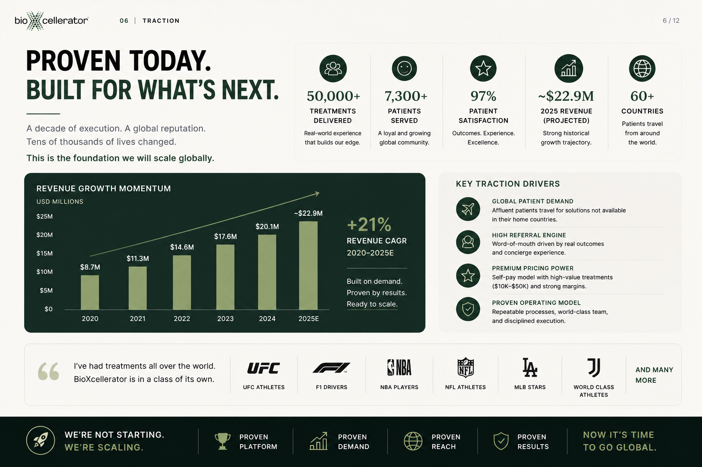
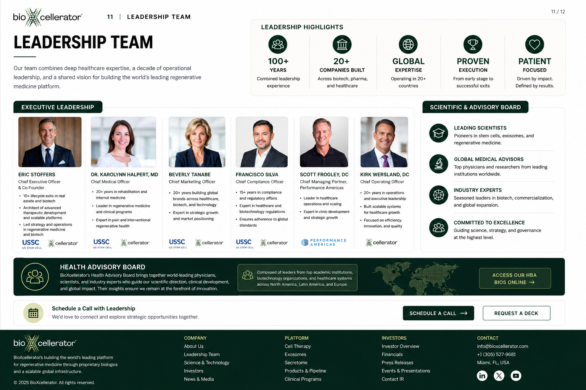

Confidential investor presentation | 2026
BioXcellerator
The global standard in regenerative medicine.
A vertically integrated regenerative medicine platform built over a decade, now entering its scale phase across clinical services, biologics, data, and global commercial infrastructure.
The window is opening
The category is emerging. The leaders are being formed now.
Regenerative medicine is moving from fringe treatment category to global healthcare platform opportunity. BioX spent the last decade building operational infrastructure before the market fully opened.
Discovery
Early adoption
Regulatory normalization
Global scale
Why BioX matters now
- Proven operating platform with real revenue
- Existing global patient demand at premium price points
- Manufacturing and cell bank infrastructure already built
- Premium global brand with high trust and loyalty
- Positioned before mainstream adoption unlocks globally
The BioX solution
A fully integrated regenerative platform.
BioX controls the value chain from cell origin to patient outcomes, delivering consistency, data, and scale across the entire system.
Clinical services
Specialized regenerative care across orthopedic, autoimmune, neurological, spine, performance, and longevity use cases.
Manufacturing and cell bank
ISO-certified laboratory and cell bank infrastructure built for purity, potency, reliability, and custody.
Research and data engine
Outcomes tracking, proprietary protocols, and continuous data capture create evidence that compounds.
Commercial platform
Direct-to-patient demand, physician networks, distribution channels, and emerging B2B biologics scale.
Proven today
Built for what is next.

Momentum with multiple drivers.
BioX combines global patient demand, a referral engine, premium pricing power, and a proven operating model. The platform is not starting from zero. It is scaling from demonstrated demand.
Why BioX wins
Our moat is our system.
Vertical integration
BioX owns the full stack while typical competitors outsource critical components.
Data flywheel
50,000+ treatments create a proprietary outcomes engine competitors cannot easily replicate.
Premium brand
A concierge experience attracts affluent global patients and physician referrals.
Multi-revenue model
Clinics, products, referrals, licensing, and expansion create multiple levers of growth.
Regulatory arbitrage
BioX operates where innovation can move faster, then expands as markets normalize.
Product platform
Proprietary biologics built for scale and impact.
BioX is building a portfolio of next-generation biologics that unlock global distribution, recurring revenue, and higher-margin enterprise value.
Quantum MU53 Cells
Premium live-cell therapy engineered for potency, purity, and performance.
Evoke Exosomes
Lyophilized exosomes designed for potency, shelf stability, and B2B scalability.
NovaCell Plus
A proprietary blend of cells, exosomes, and bioactive factors.
Prism Secretome
Concentrated signaling molecules for broad regenerative applications.
Market opportunity
A massive market. Multiple paths. One platform.
Demand is global, applications are expanding, and regulations are unlocking country by country. BioX is positioned to lead this shift.
$55B+
Projected global stem cell therapy market by 2032
$25B+
Projected exosome and secretome market opportunity by 2030
~16%
Projected global stem cell therapy market CAGR through 2032
Orthopedic and sports recovery
Autoimmune
Neurological
Spine and chronic pain
Longevity and performance
Exosomes and biologics
Global access
Expansion strategy
Built here. Expanding everywhere.
The roadmap takes a proven Colombian platform to the U.S. and beyond, creating clinical, commercial, and product scale at every step.
Optimize Medellin flagship
Strengthen the foundation and refine operations.
Launch Utah proof-center
Establish U.S. presence and market credibility.
Scale physician network
Multiply reach through national and international partners.
Commercialize products
Scale exosomes, secretome, and biologics channels.
Selective global expansion
Use regional pathways to become the global standard.
Financial overview
Strong foundation. Powerful growth.
BioX is built on a high-margin, asset-light model with multiple revenue streams and clear visibility to significant scale.
Leadership team
Deep healthcare expertise. Proven execution.
BioX combines operational leadership, clinical experience, global expansion knowledge, and a patient-focused mission.

Investment opportunity
Partner with us. Build extraordinary.
BioX is raising $8M+ USD to accelerate development and commercialization of its proprietary biologics platform and expand global impact.
$8M+
Preferred equity or convertible note
Let's connect